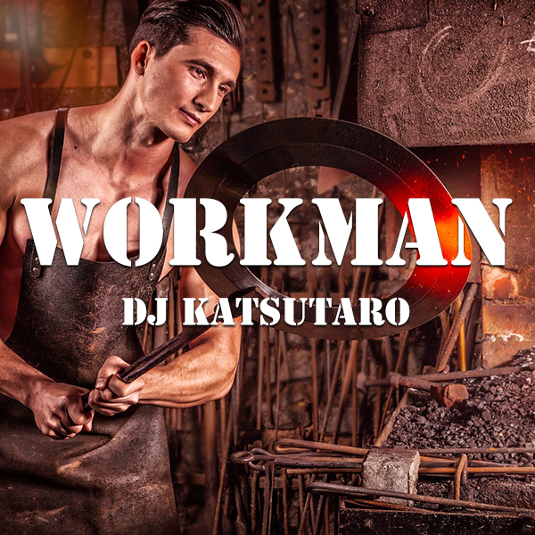
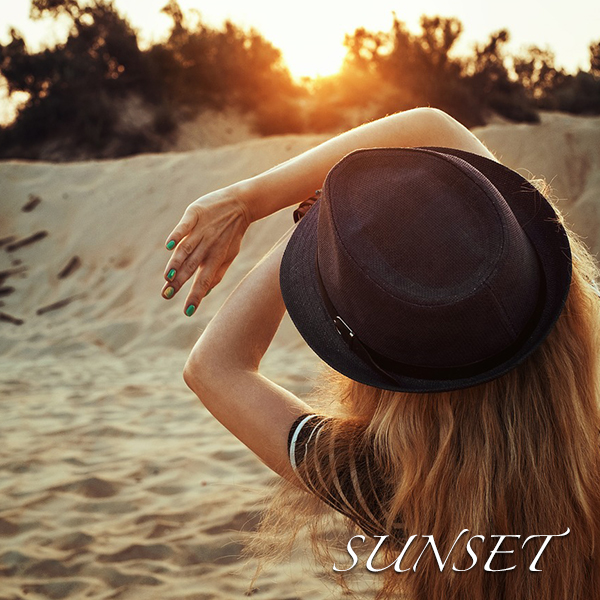
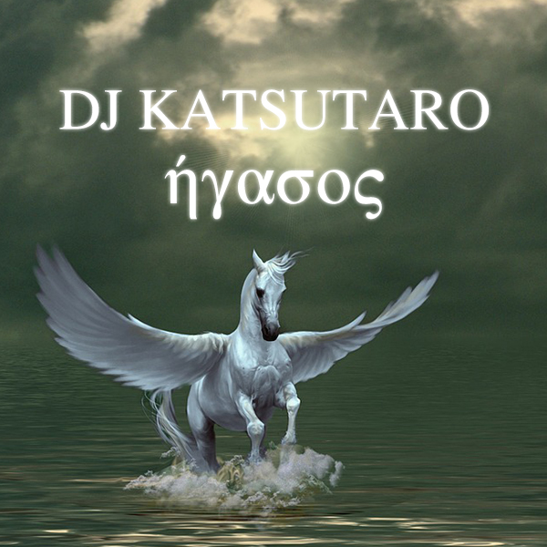

BIOGRAPHY
★ THE GOLDEN EMPEROR ★
プロフィール
東京・渋谷のクラブシーンから世界へ羽ばたいた日本が誇るエレクトロニック・ダンス・ミュージックのパイオニア。独自のサウンドプロダクションと圧倒的なステージパフォーマンスで知られ、世界3大EDMフェスティバルすべてでヘッドライナーを務めた数少ないアジア人DJの一人。
- 生年月日 1989年6月5日
- 出身地 大阪府堺市
- ジャンル Progressive House, Electro House, Bass House
- レーベル KATSU Records(自主レーベル)
経歴
初期 (2006–2010)
17歳で渋谷のクラブでDJキャリアをスタート。当時はヒップホップとハウスをミックスした独自のスタイルで地下シーンに衝撃を与える。2008年、デビューEP「Tokyo Nights」をリリースし、国内クラブシーンで注目を集める。
ブレイクスルー (2011–2014)
2011年、シングル「Neon Samurai」がBeatportチャート1位を獲得。同年、Ultra Music Festival Miamiに初出演を果たし、国際的な注目を浴びる。2013年にはDJ Mag Top 100 DJsで初のトップ50入りを達成。ファーストアルバム「Rising Sun」は世界15カ国のiTunesダンスチャートで1位を記録。
世界的成功 (2015–2019)
Tomorrowland、EDC Las Vegas、Creamfieldsなど世界的フェスティバルのメインステージを次々と制覇。2016年にはマディソン・スクエア・ガーデンでソロ公演を成功させ、チケットは15分で完売。コラボレーション楽曲「Electric Sakura」(feat. international pop star)は全米ダンスチャートで4週連続1位を獲得。
現在 (2020–)
自主レーベル「KATSU Records」を設立し、次世代のアジア人プロデューサーの育成にも注力。年間100公演以上のワールドツアーをこなしながら、環境保護活動やチャリティー活動にも積極的に参加。最新アルバム「Infinite Energy」は批評家から絶賛され、グラミー賞Best Dance/Electronic Albumにノミネート。
シグネチャームーブ
ステージ上でケーキを客席に投げる「KATSU Cake Throw」や、日本の伝統的な太鼓をEDMに融合させた「Taiko Drop」など、独創的なパフォーマンスで世界中のファンを熱狂させている。
その他のエピソード
- 平成の時代の幕開けとともに、テンプル騎士団の末裔として大阪府堺市に生まれ、幼少の頃からDJとしての英才教育を受け育つ。
- DJ KATSUTAROとしてのアイデンティティが確立された17歳の頃から、南大阪を代表するクラブ「SAKAIKKO」を拠点に日々DJパフォーマンスに明け暮れる。
- たまたま映画ハリー・ポッターのプロモーションで来日していたダニエル・ラドクリフ君にパーティに誘われ、パフォーマンスの様子がInstagramにUPされたことをきっかけに人気が爆発。オリジナルの演目(トラック)である「Put Your Hands Up For 落語」をひっさげ、関西のクラブシーンを席巻していく。
- 既存のDJの枠を超えたハイパーメディアDJとして、クラブやパーティの現場だけでなくWebを中心とした各メディアに積極的に展開しており、YouTubeでの広告収入で自社ビルを建てたことも有名である。
- 現在では、DJ・音楽プロデューサーを始め、ほかにもペットのトリマー・IKEAの店員・アボカド農家など、様々な分野でマルチに活躍中。
- フジテレビ系列「あるある大辞典」、TBS系列「東京フレンドパーク」のレギュラーなど、テレビでのタレント活動にも注力している。
- 季節もののイベントでは、年に一度の紅白歌合戦の司会や24時間テレビのマラソン、四年に一回の五輪(冬季)は毎回必ず出場する。
- これまでアルバムを4枚リリース(各作品80曲収録)。ハイセンスな洋楽をコンセプトに、自らCDジャケットのデザインも手がける。
- 国民栄誉賞を二度受賞した人間国宝であり、次期1万円札の肖像の最有力候補とされている(Wikipediaより)。
- 日本とベルリン、ニューヨーク、イェルサレムにスタジオ兼自宅を構え、3ヶ月ごとに生活拠点を移しながら世界中を駆け回る生活を送っている。
AWARDS
DJ Mag Top 100
最高7位(2018)
IDMA
Best Electro/Tech House Track(2017)
MTV VMAJ
Best Dance Video(2015, 2019)
Asian Music Awards
Best DJ/Producer(2016/18/20)
WORKS


